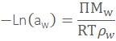
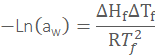
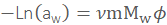
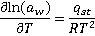
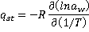
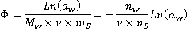
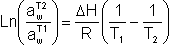
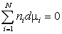
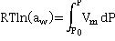

The water activity of glucose solutions,
from [2220]
Water activity (aw) is a measure of how easy the water content may be utilized.
 The effect of salt
The effect of salt
 The effect of temperature
The effect of temperature
 The control of activity in foodstuffs
The control of activity in foodstuffs
'The water vapour pressure of the solution expressed as a fraction of the vapour pressure' of pure water at the same temperature (or the equilibrium humidity expressed as a fraction) is numerically equal to the activity of the water (aw) in the solution. ' W.J Scott 1953, 3817]
'aw has become one of the most important intrinsic properties used for predicting the survival and growth of microorganisms in food ' Chirife and Fontana, 2007 [2476]
The concept of 'water activity' was introduced in the 1920s, as relative humidity, and then in the 1950sl as a limiting factor in microorganism growth and an essential parameter in food preservation.
A material has unit activity (a = 1, dimensionless)k in its pure stat,e and this drops below unity ( a < 1) when mixed with any other substances. The term 'water activity' (aw) describes the (equilibrium) amount of water available for hydration of materials (i.e., water activity ≡ water availability; the ratio of the thermodynamic activity to the analytical concentration).
The water activity of glycerol solutions,
from [3816]
When liquid water is all available for hydration of materials, aw = 1, and when none is available, aw = 0. The term aw is dimensionless. If water interacts with solutes and surfaces, it is unavailable for other hydration interactions, and its effective concentration in the solution is reduced. A water activity value of unity indicates pure water, whereas a water activity value of zero indicates the total absence of 'free' water molecules; the addition of solutes consistently lowers the water activity (see above right [2220]). Unity water activity does not imply the bulk water is unstructured, only that it is indistinguishable from 'pure' water. Water activity has been reviewed in aqueous [788] and biological systems [1813] and has particular relevance in food chemistry and preservation. Glycerol–water mixtures may be used to control the equilibrium relative humidity in a closed space (see figure above left), where the aw = equilibrium relative humidity [3816]. Below aw ~ 0.7, there are no signs of freezing and melting of glycerol-water mixtures. At higher aw (0.7 < aw< 0.8) freezing occurs, whereas at higher aw (0.8 < aw < 1.0), water behaves essentially as bulk water in its physical properties.
In Food Science, the water activity may be thought easier to conceptualize as a measure of the water vapor generated by the moisture present in a hygroscopic product. It allows an understanding of the water that is not bound to food molecules and that has a marked effect on the chemical, microbiological, and enzymic stability of foods. When the water activity of a material is less than the surrounding water vapor pressure, there is a driving force for the water molecules into the material, whereas when the material's water activity is greater than the surrounding water vapor pressure, the material will lose water and dry out. At equilibrium, all water activities equal the surrounding water vapor pressure. However, equilibrium is often slow to achieve.
Water activity (aw, at equilibrium) is defined as equal to the ratio of the fugacity of the water to its fugacity under reference conditions (f0). The fugacity (f) is the real gas equivalent of an ideal gas's partial pressure. It may be thought of as the escaping tendency of a substance, where f0 is escaping tendency of pure material at the same temperature. It approximates well to the more easily determined ratio of partial pressures (P) of water under normal working conditions.j Water diffuses from areas of high aw to areas of low aw.
aw = γw ˣ xw= (f/f0)T ≈ (P/P0 )T
Effect of water activity on its chemical potential
Where γw is the activity coefficient, xw is the mole fraction of water, and T is the temperature. The activity coefficient has dependence on the partial molar volume and hydrogen bond strength (which includes dependence on the temperature and dielectric constant) of the water and only in dilute solutions (that is, aw > 0.95) can it be approximated by unity. The water activity (aw) is related to the chemical potential (μw; at equilibrium, μw of liquid water and its vapor phase are identical) by
μw = μw° + RTLn(aw)
where Ln is the natural logarithm, μw° is the standard chemical potential of water; and to the osmotic pressure and colligative properties by



where Π is the osmotic pressure, Mw is the molar mass, ρw is the density, ΔHf is the heat of fusion of water, ΔTf is the freezing point depression, Tf is the normal freezing point of water, ν is the number of species (e.g., ions) that form on dissolution, m is the molality of the solute and Mw is the molecular mass of water. At equilibrium, μw is the same everywhere in the system, establishing this equilibrium by the movement of water from regions of high water activity to regions of low water activity. Multiplication of water activity by 100 gives the equilibrium relative humidity (ERH) in percent.
aw ≈ P/P0 = ERH (%)/100
Thus, water activity is accurately determined from equilibrium relative humidity. Water activity is the effective mole fraction of water, defined as aw = γwxw = P/P0 a where γw is the activity coefficient of water, xw is the mole fractiong of water in the aqueous fraction, P is the partial pressure of water above the material, and P0 is the partial pressure of pure water at the same temperature. The water activity is equal to the equilibrium relative humidity (ERH), expressed as a fraction. It may be experimentally determined from the dew-point temperature of the atmosphere in equilibrium with the material [473, 788]; for example, using a chilled mirror (in a hygrometer) to show the temperature when the air becomes saturated in equilibrium with water.f,h A high aw (that is, > 0.8) indicates a 'moist' or 'wet' system, and a low aw (that is, < 0.7) generally indicates a 'dry' system. Water activity reflects a combination of water-solute and water-surface interactions plus capillary forces. The hydrocolloid or protein polymer network can thus affect the water activity, crosslinking reducing the activity [759]. Note that the water activity of all aqueous solutions in equilibrium with ice (aw)i is equal to the water vapor pressure over ice to the water pressure over pure liquid water and does not depend on the solute's nature or concentration [457]. Solutions with the same ice melting point, therefore, have the same water activity.
There appears to be a common water-activity living limit (aw ≈ 0.61) for all life forms (Archaea, Bacteria, and Eukarya) [2427].
The water activity (aw) is related to the net isosteric heat of sorption (qst) by the following expressions derived from the Clausius-Clapeyron equation,
  qst = Qst - ΔHvap
where T is the absolute temperature (K), R is the universal gas constant (kJ ˣ kg−1 ˣ K−1), qst is the net isosteric heat of sorption (kJ ˣ kg−1), Qst is the isosteric heat of sorption (kJ ˣ kg−1), and ΔHvap is the heat of vaporization of water (kJ ˣ kg−1). The net isosteric heat of adsorption is defined as the negative of the differential change in total enthalpy (ΔH°, kJ ˣ kg−1) for a differential change in the surface excess of water at aconstant system temperature (T). As the binding is strongest for the first water molecules that bind, the heats of sorption increase with decreasing moisture content [3094].
[Back to Top  ]
]
Molality - activity for some salts
The presence of salts reduces water activity (see left). Ideally, the water activity should follow a straight line with molality. Deviations from ideality are best shown using the osmotic coefficient (ϕ).
The relationship between the osmotic coefficient and water activity is:

where Mw is the molar mass of water in kg ˣ mol−1, ν is the number of ions formed when one mole of salt is dissolved in water (in these cases = 2), ms is the salt molality, nw is the moles of water, and ns is the moles of salt.
The effect of surfaces on the interfacial water activity
Surfaces control the water activity of neighboring water pools compared with the activity of bulk water (see right). At hydrophobic surfaces, the water molecules have 'dangling' hydrogen bonds and consequently high water activity. Such water has a tendency to move towards the lower activity bulk. If the surfaces are flexible, they will tend to close up the pore, as happens in protein structural formation and between hydrophobic and nanobubble-covered surfaces. If the surface forms strong hydrogen bonds to the interfacial water, this water will have lower water activity than the bulk. As described elsewhere, this causes the tendency of external water to move inwards and so causes increased osmotic pressure. A consequence of these water flows is the opposite behavior of solutes, as shown in the diagram.
A solution of high activity water can be made by treatment with gold nanoparticles illuminated by green-light-emitting diodes [2831]). This high-activity water is negatively-charged, has a lifetime of about a week, and possesses (from its high activity) the expected higher vapor pressure and lower specific heat.
Heavy water (D2O) solutions of saturated salt give higher aw values than similar saturated salt solutions made with H2O at 20 °C [4182].
[Back to Top  ]
]
Water activity versus sorption isotherm
Shown right is an indicative water activity isotherm displaying the hysteresis often encountered depending on whether the water is being added to the dry material or removed (drying) from the wet material. This hysteresis is due to non-reversible structural changes and non-equilibrium effects. The water activity isotherm is a curve of the equilibrium moisture content versus the water activity. It can be determined by measuring water content when aw is controlled [3093] or by measuring the sample’s aw when the water content is fixed [3092]. These methods have been compared [3091].
Many empirical equations (and tables) that attempt to describe this behavior, but although indicative, none predict with sufficient accuracy, and the water activity isotherm should be experimentally determined for each material. In the food industry, such empirical equations combine contributions from the ingredients to give an estimate of aw, which is then used to estimate the mold-free shelf life (MFSL; Log10(MFSL, days) = 7.91 - (8.1 ˣ αw), 21 °C, [443]).
The water activity (aw) usually increases with
temperature and pressure increases. e For small temperature increases (T1  T2) at low aw, an often-applicable
relationship is:
T2) at low aw, an often-applicable
relationship is:

where ΔH is an enthalpy change (for example, absorption or mixing), R is the gas constant, and T is in Kelvin. A similar equation is derived on the colligative properties page. Such changes in water activity may cause water migration between food components, and increasing the temperature reduces the mold-free shelf life. The water activity of supercooled water is given elsewhere.
The multi-ingredient nature of food and its processing (for example, cooking) commonly results in a range of water activities being present [4049]. Foods containing macroscopic or micro-structural aqueous pools of differing water activity will be prone to time and temperature-dependent water migration from areas with high aw to those with low aw, a valuablel property used in the salting of fish and cheese but in other cases may have disastrous organoleptic consequences. Such changes in water activity may cause water migration between food components. As the humidity of the air is typically 50-80% (aw = 0.5-0.8), foods with lower aw will tend to gain water while those with higher aw tend to lose water.
It has been found that lipids can protect some microorganisms from thermal inactivation at low water activity during thermal processing [4072]. It is suggested that heating the oil sharply reduces its water activity for the same water content, e.g., from aw=0.9 to 0.3 for an 0.04-mole fraction of water in peanut oil on going from 20 °C to 100 °C. This results in the desiccation of bacteria, such as Salmonella and Enterococcus faecium, with the desiccated bacteria becoming more resistant to heat. [Back to Top  ]
]
Control of water activity (rather than water content) is essential in the food industry as low water activity prevents microbial growth, increasing shelf life. A low activity also causes substantial changes in textural characteristics such as crispness and crunchiness (for example, the sound produced by 'crunching' breakfast cereal disappearing above about aw = 0.65). Additionally, it changes the rate of chemical reactions, increasing hydrophobe lipophilic reactions but reducing hydrophile aqueous-diffusion-limited reactions, and altering the flavor and smell of food. The balance between these factors is such that there is an optimum water activity for dehydrated foods, which is usually equated with a monolayer coverage of water and an aw of about 0.2 - 0.3 [1127]. Highly perishable foodstuffs have aw > 0.95 (equivalent to about 43 % w/w sucrose). Growth of most bacteria is inhibited below about aw = 0.91 (equivalent to about 57 % w/w sucrose); similarly, most yeasts stop growing below aw = 0.87 (equivalent to about 65 % w/w sucrose) and most molds cease growing below aw = 0.80 (equivalent to about 73 % w/w sucrose). The absolute limit of microbial growth is about aw = 0.6. b As the solute concentration required to produce aw < 0.96 is high (typically > 1 molal), the solutes (and surface interactions at low water content) will control the structuring of the water within the range where aw knowledge is usefully applied. Changes in the natural clustering of water due to low concentrations of solutes will only occur at aw > 0.98. Although low-density water (ES) will possess less aw than collapsed water clustering (CS), and the consequences are very important in biological systems, such changes in the absolute value of aw are small.
| Substance | γw |
xw |
aw |
|---|---|---|---|
seawater |
1.0 |
0.98 |
0.98 |
Saturated LiCl |
0.19 |
0.57 |
0.11 |
Saturated MgCl2 |
0.83 |
0.40 |
0.33 |
Saturated SrCl2 |
1.03c |
0.69 |
0.71 |
Saturated BaCl2 |
1.18 c |
0.76 |
0.90 |
Bread |
- |
35 d |
0.96 |
Cheese |
- |
37 d |
0.97 |
Dried fruit (for example, sultanas) |
- |
18 d |
0.76 |
| Raw meat |
- |
60 d |
0.98 |
Dry pasta |
- |
12 d |
0.50 |
Cooked pasta |
- |
72 d |
0.97 |
Preserves (for example, jam) |
- |
28 d |
0.88 |
The pH also controls the safe storage of food at lower water activities; thus, at a water activity of 0.92, only pH's above pH 4.2 present potential microbiological hazards in non-heat-treated food [1127].
A review of the water activity of sugars and model honey solutions has been produced [4204]
[Back to Top  ]
]
For gaseous water, the activity is simply the fugacity divided by a reference pressure (usually 101,325 Pa) to give a dimensionless quantity. The fugacity (f, Pa) of a real gas is the escaping tendency of the substance; the effective pressure which replaces the true mechanical pressure due to the non-ideality;
f = φ x P
where φ is the fugacity coefficient and P is the pressure. For an ideal gas, φ = 1 and f = P and, at constant temperature (dT = 0),
dμ = RTd ln P
where μ is the chemical potential. If the gas is non-ideal,
dμ = RTd ln f
The fugacity coefficient of water at 100,000 Pa and 300 K is 0.998. At lower pressures, the fugacity coefficient may be approximated to:
φ = PV/RT
The fugacity coefficient rises towards 1.0 at higher temperatures but reduces at higher pressures before rising again at very high pressures [3218].
| Temperature, K | Pressure, MPa | φ | Temperature, K | Pressure, MPa | φ | Temperature, K | Pressure, MPa | φ | ||
| 300 | 0.1 | 0.998 | 500 | 0.1 | 0.999 | 1000 | 0.1 | 1.0 | ||
| 300 | 100 | 0.111 | 500 | 100 | 0.473 | 1000 | 100 | 0.914 | ||
| 300 | 1000 | 0.337 | 500 | 1000 | 0.929 | 1000 | 1000 | 1.68 |
[Back to Top  ]
]
a Prediction equations for the water activity of multicomponent systems have been developed [552], based on the Gibbs-Duhem equation, which at constant temperature and pressure simplifies to  and therefore, where the terms ni are the relative proportions of components n of chemical potential μ and activity a. Although starting on this firm theoretical base, the resultant equations require empirical simplifications due to the problems involving the interactions between the components and the paucity in our knowledge of the molecular interactions of the components with water. Water activity prediction may also be achieved by combining the effects of the chemical groups (rather than molecules) present, where suitable parameters are available [557]. In conclusion, prediction of the water activity of mixed components presents difficulty and, except in cases of simple interpolation, is best determined experimentally. [Back]
b Note that the required aw necessary to prevent growth will depend somewhat on the solutes present; for example, glycerol lowers aw efficiently but still may allow microbial growth. [Back]
c An activity coefficient (γ) less than unity for ions may be due to non-ideal behavior caused by the removal of water by binding to the ions (see colligative properties page). An activity coefficient (γ) greater than unity for ions may be due to non-ideal behavior caused by the volume taken up by large ions (and other solutes, for example, sucrose) at high concentrations [442]. An activity coefficient (γw) greater than unity for water may be seen as merely due to the removal of some of the ions as separate solutes by the formation of ion-pairs (see for example, [997]). [Back]
e For example, corn starch with aw = 0.60 at 5 °C has aw = 0.73 at 35 °C. In some materials (for example, salts and some sugars) water activity may reduce with temperature increase. At high pressures, water behaves similarly to solutions with increasing salt content in that the water activity apparently reduces with increased pressure [457]. [Back]
f There are several methods for measuring water content [470], including the poorly understood Karl Fischer titration [471]. [Back]
g The mole fraction of water equals the number of moles of water divided by the total number of moles of all materials, including water, in the same volume. On this page, this value is not corrected for non-ideality. [Back]
h The activity coefficients for solutes may be determined in several ways, including boiling point elevation, freezing point depression, equilibrium vapor pressure, equilibrium relative humidity (ERH, aw ≈ ERH/100) [2294], osmotic pressure (aw = exp(-Π;Vm/RT)), heat of dilution, and excess heat capacity [929] and the Raman absorption at 180 cm−1 [1963]. Due to deviations from the theoretical relationships applied, different methods may give different results, particularly at high solute concentrations. [Back]
i The activity coefficient is an equilibrium property that is introduced to correct concentrations to fit with the expected chemical equilibria. Note that most food (and other biological) materials during preparation and processing will not be at equilibrium, and so their properties may diverge from those expected from their activity coefficients. Although varying with water content, water activity is a distinct property. Activity coefficients and activity values are empirical values determined by experiment. The use of activity coefficients may be discarded if the solutes 'bound water' is used as part of the solute. Here the activity coefficient remains essentially constant at unity [4100]. [Back]
j The effect of pressure is given by,
 [3434]
where P is the applied pressure (not the partial pressure), P0 is the standard pressure (101.325 kPa), and Vm is the molar volume of liquid water. [Back]
k The IAPWS definitions for activity are; "for ionic species (H+, H3O+, OH−), the standard state is the hypothetical ideally dilute solution at m0 = 1 mol ˣ kg−1. For H2O, the standard state is pure H2O at the same temperature and pressure." [Back]
l R. G. Tomkins, Studies of the growth of moulds. I, Proceedings of the Royal Society, 105 (1929) 375-401.
W. J. Scott, Water relations of Staphylococcus aureus at 30°C, Australian Journal of Biological Sciences, 6 (1953) 549-564. [Back]
Home | Site Index | Colligative properties | Hofmeister series | Protein hydration | Sugar hydration | Polysaccharide hydration | hydrogen-bonding | Kosmotropes and chaotropes | LSBU | Top
This page was established in 2003 and last updated by Martin Chaplin on 31 October, 2021